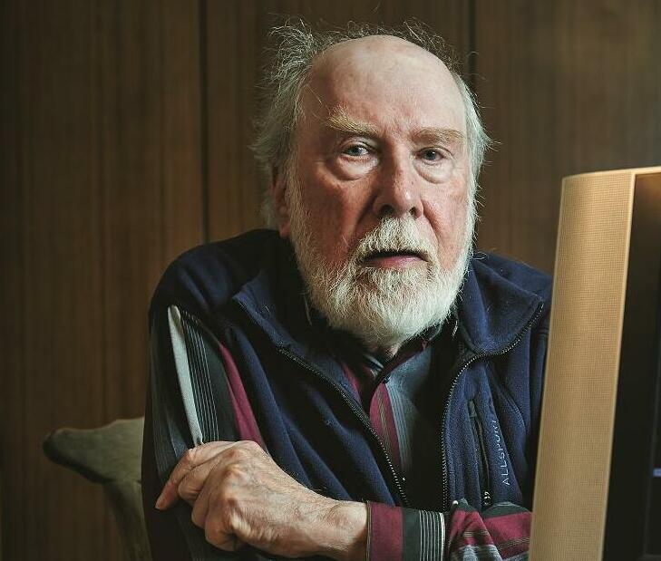

"People look at programming languages like religions:if you belong to one, you can't belong to others."
—Nikluas Wirth
1980s
Niklause Wirth
Niklaus Wirth grew up in Switzerland, and he spent most of his professional life at the Swiss Federal Institute of Technology (ETH) in Zürich. After earning his first degree there in 1959, he left for graduate study in North America and earned his Ph.D. in 1963 from the University of California, Berkeley. After a stint on the Stanford faculty, he returned to ETH in 1968. He was a driving force behind the creation in 1981 of what quickly became one of the world’s leading computer science departments, serving as its head for much of the 1980s. Wirth retired in 1999, but remained a frequent presence on its beautiful hilltop campus for many more years.
Wirth began his rise to prominence in computer science by creating two languages: Euler (based on his dissertation work), and the systems programming language PL360 (for the IBM System/360 series of computers). This early work broke new ground in formal separation of syntax and semantics, in novel implementation techniques, and in careful language design for efficient implementation with specific parsing methods.
Both languages were heavily influenced by Algol. Wirth was part of the elite international group centered on the Algol project, which collaborated to define and implement a series of language standards. The first high level languages, such as FORTRAN, were popular because they made it much easier to write and maintain application programs. But they were hard for computer companies to implement because the hardware was so limited, compiler techniques were poorly understood, and the languages themselves were clumsy or overly complex. Algol 60, the most important creation of the Algol group, introduced recursive functions, structured code blocks, and local variables. It also pioneered the formal description of programming language syntax.
Starting in 1957, when academic departments and regular conferences for computer scientists did not yet exist, the Algol project laid a vital foundation for the emerging discipline. Through Algol, Wirth collaborated with other future Turing Award winners including C.A.R. (Tony) Hoare, Edsger Dijkstra, and Peter Naur. Like Wirth, all had joined the group after showing early promise as designers of compilers and other systems software, production of which was the major practical challenge facing computer scientists during this era.
In 1966 the Algol group voted against a proposal by Wirth to make its next language an extension and improvement of Algol 60 influenced by his own language EULER. Instead, it chose for the Algol 68 proposal a rival design of great complexity, full of novel and hard-to-implement features. Wirth resigned from the group in 1968. He worked instead with Tony Hoare to turn the rejected proposal into a new unofficial Algol version, Algol-W .
Wirth used Algol-W as the basis for what would prove his most influential creation, the language Pascal. Following his personal aesthetic, Pascal was simple, flexible and designed for rapid compilation into efficient code. It retained Algol’s code structures, logical completeness, and support for recursion, but stripped away some of its complexity and added support for complex and user-defined data types. Wirth later wrote that the “single most important guideline” was “to include features that were well understood, in particular by implementors, and to leave out those that were still untried and unimplemented.”
Pascal was adopted in 1971 for teaching at ETH, and it spread rapidly to other universities. To help implement Pascal on computers of all kinds, Wirth created a new kind of compiler which was written for, and generated code to run on, a virtual machine. Simulating this virtual machine on a new computer made it easy to port his compiler.
During the 1970s Wirth shared the interest of other veterans of the Algol project, such as Edsger Dijksta and Tony Hoare, in programming methodologies and formal methods. He participated in the IFIP Working Group on Programming Methodology, proposing the idea of stepwise refinement of code as a complement to the various visions of “structured programming” they put forward. His books Systematic Programming and Algorithms + Data Structures = Programs are among the most influential contributions to the literature on programming methods and concepts.